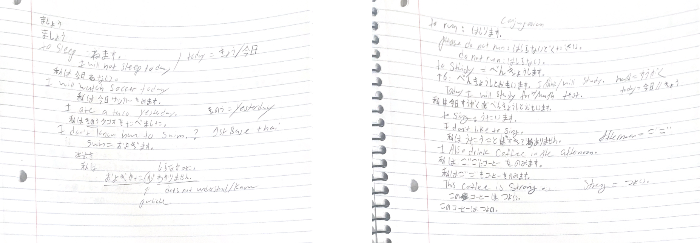
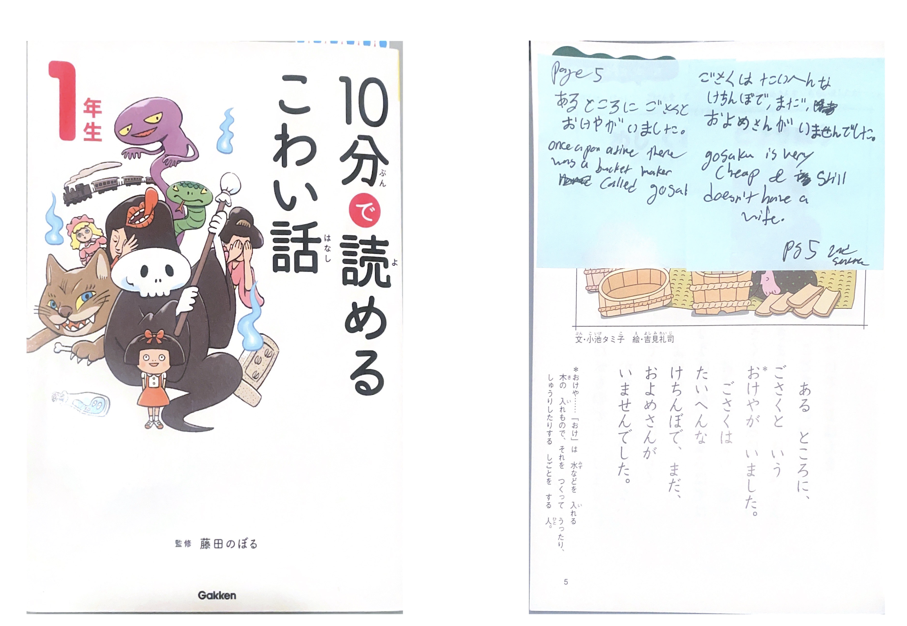
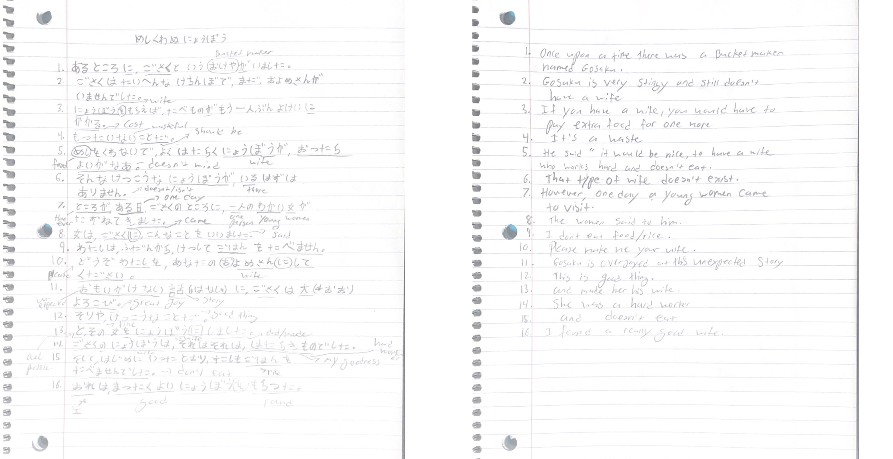

Blog Post
Report 1
For the First lesson I first started off by taking a look at the last time I took JAPN 102. This way I could get a better idea of some of the material and verbs that were covered. I began to play around with verbs and modified them by using suffixes/conjugations. I would practice making random sentences and conjugating words from memory.
Report 2
For this week's practice, I began using the Japanese Language Lab. I would try practicing conjugation from memory and then comparing that to the website. I need to practice but after doing examples it has slowly started connecting the dots again. A practice I did was making random sentences in English and then I began to try to convert it to Japanese. I would try to convert it from memory and then try to use the Not-To-Be sentence generator. Something I realized was that I sometimes confused で and に particles when creating a sentence.
Report 3
Over the weekend I went to a Japanese Book store, there I purchased a book that I would use to translate by hand using my mind and Japanese Language Lab. The Book is called 10分で読めるこわい話, it is a book made up of short Japanese horror stories for little kids. I began translating the book by hand slowly breaking down phrases to see if I could identify any. If I couldn't figure out the sentence I would then use J.L.L to help Identify the sentence.
Summary: The first story is called めしくわぬにょうばう, it starts off with the introduction of a man named Gosaku who was single and cheap. He wanted a wife but didn’t like the idea that it would be another mouth to feed. He wished for the perfect wife, a wife that is hard working and doesn’t eat. One day a woman arrived and she was the perfect wife, she works hard and doesn’t eat. But one day Gosaku noticed that the rice and miso he had would slowly disappear. So one day he pretends to leave the house and he hides to see what his wife does. He witnessed her make huge servings of miso soup and rice. Wondering why she would need that food for, he witnessed her undo her hair tie and there he saw a giant mouth in the back of her head. Out of fear he decided to break up with the demon woman. She agreed to this separation on the terms she can have a giant bucket and rope. The oni/demon woman then captured Gosaku using the bucket and rope. Luckily, Gosaku managed to escape and hide himself between some bushes.
Report 4
To summarize this project I would say that it took surprisingly longer than I would imagine. The chapter in this book was 35 pages but it took some time getting used to reading Japanese vertically and writing down everything into my notebook. I then proceeded to break down the sentence using what verbs, nouns, and particles I knew. When I got stuck with kanji and words I didn’t know, using Japanese Language Lab (J.L.L) would help me determine the rest. The only word I struggled finding even with the J.L.L was the word 桶屋 / おけや which means bucket maker.
Report 5
For this week, Inspiration hit me to do something different that wasn’t just verb conjugation and breaking down sentences. It would be a fusion of two different academic fields that I know of, Japanese and Computer Science. Since I’ve been practicing and using Nomura Sensei’s Website, I decided it would be good to do something similar that can serve as a reference if you wanted to Learn Japanese. Building the website I first thought about what would be a good starting point. It would also serve as a blog/way to update my progress with my reports. Overall I found making my first website pretty overwhelming because there were a million things I wanted to do but I had no idea where to start. I now know how difficult it is to try to explain something that you know very well but can’t put it into words. I felt that time was against me but I plan to keep on updating this Website.However, there was some good parts I enjoyed like making the background and The function I decided to make that I enjoyed doing was making a random word generate that I still need to add a lot more words.
After using the Japanese Learning Lab to do different activities, I found it to be very useful and easy to use. My favorite feature would be the conjugation chart compared to the physical conjugation chart. It is easier to understand.